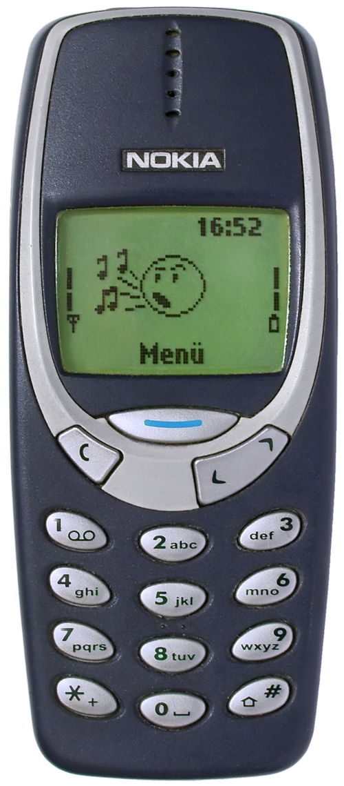
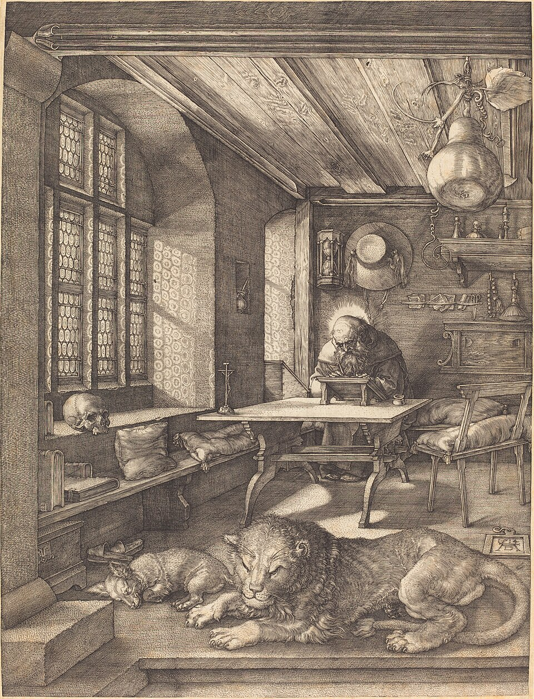
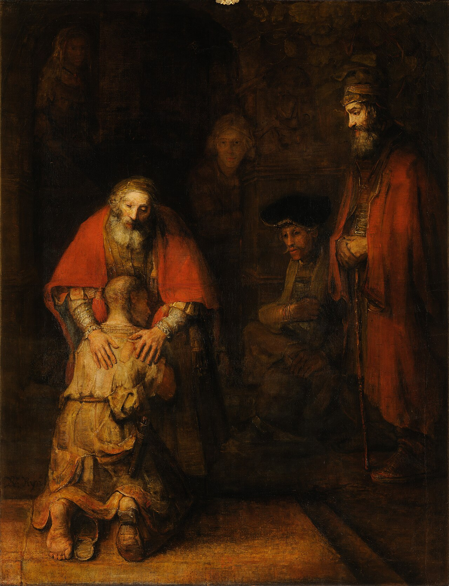
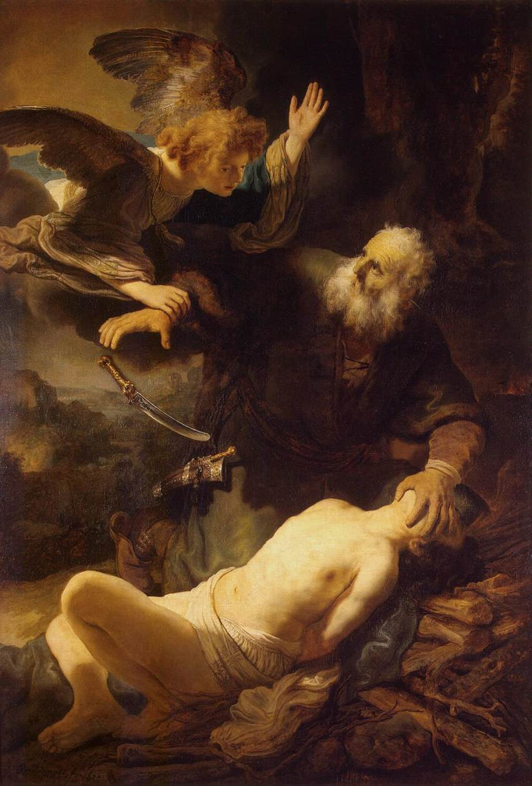

Как говорить с ИИ, чтобы получать пригодный черновик, а не «среднее по интернету»
Ментальная модель — краткий итог Уроков 1–2
Сверхмощный Т9,
прочитавший весь интернет

Видит только своё контекстное окно:
Не знает ни возраста детей в ВШ, ни традиции вашей церкви, ни грамотности группы, ни тайминга.
Jagged Frontier — Итан Моллик · вывод: перепроверять всё
«Убедительно для большинства» и «истинно» — для модели одно и то же
Без оптики — «средняя температура по больнице»
Ответ ИИ — черновик стажёра,
а не кафедра
Нагенерили бред и транслируете людям — виноват не молоток. «Немногие делайтесь учителями» (Иак 3:1)

Шесть блоков промпта
Сквозной пример — Лк 15

Для серьёзной задачи. Просто погуглить — можно и одной фразой
Формат — три артефакта:
Приём Урока 2 — против нейрослопа
Каждый пример — пристрелочный выстрел: следующий точнее
Нейрослоп — не вина ИИ,
а недостаток навыка
Выбрать лучший по своей интуиции → докрутить
Пусть ИИ сам вытянет из вас контекст
Пример — урок ВШ по Быт 22

Вопросов бывает 5, бывает 50 — и большинство о том, о чём вы не подумали
Работает с любым разумным исполнителем — и с людьми:
Не «присобачь плинтус» и не инструкция по саморезам — золотая середина. Эксперт сразу подсветит проблемы, пока ничего не сделано
Проверка результата на прочность
В том же чате модель хвалит свою работу
«Начальник, плинтус идеальный, делал как для себя»
Жаргон · отрыв от текста · законничество · вода · неверные цитаты · эйзегеза
Критика ИИ не заменяет
вашей экспертизы, интуиции
и молитвенной работы над текстом
Писание, цитаты, числа
Дверца: и угодить вам, и не погрешить против фактов
Модели труднее выдумать — ей приходится искать.
Вам и критику легче проверить
Почему длинный чат «тупеет»
2 чата × 250 тыс. > 1 чат × 500 тыс.
Большую задачу — по этапам, каждый в новом чате:
Техники промптинга работают и с агентами — про них отдельно дальше в курсе
Вопросы?